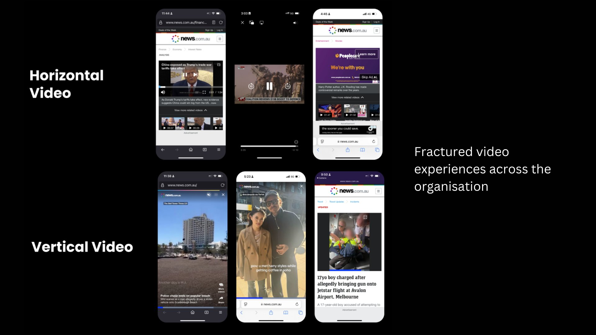
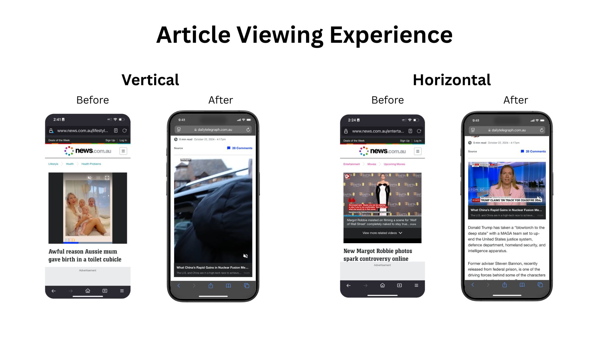
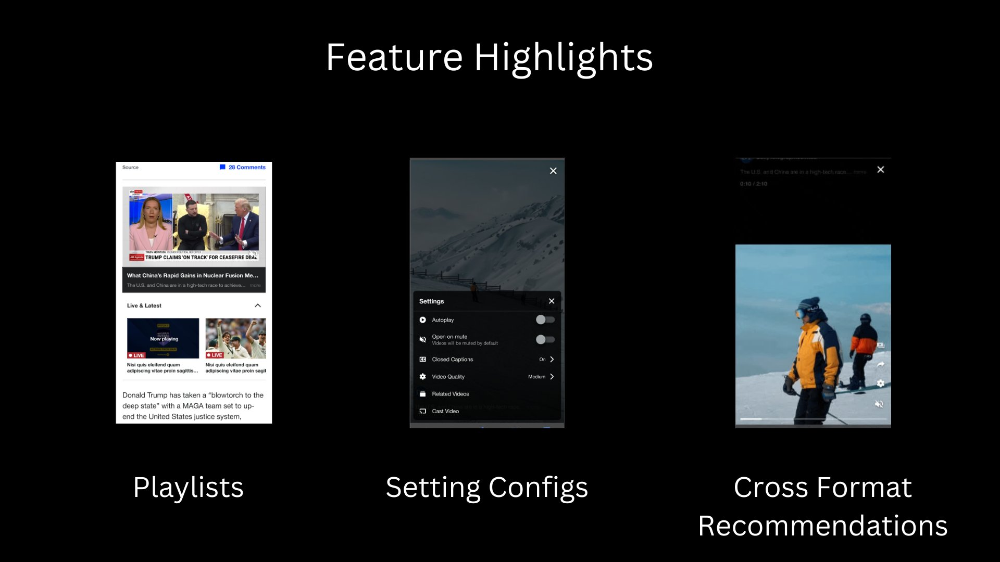
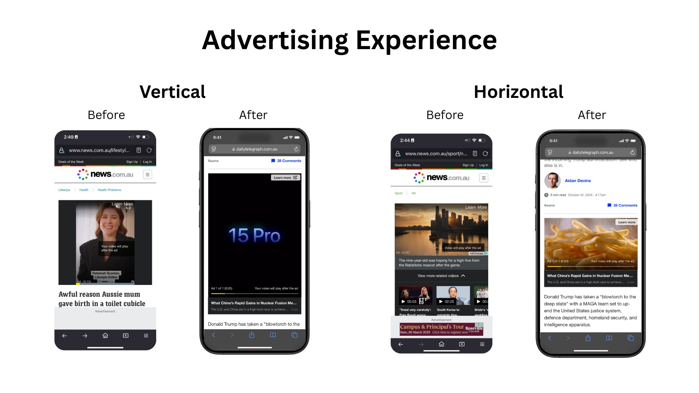

Rebuilding News Corp Australia's entire video infrastructure from the ground up — consolidating 6 player variants into one adaptive platform, growing weekly video starts from 20M to 26M, and pushing annual video views from 1 billion to 1.3 billion.

News Corp Australia's video infrastructure had accumulated years of technical debt — multiple overloaded player instances, hardcoded inflexible features, and no adaptation to user environments. Each brand ran its own implementation with an inconsistent experience, preventing meaningful monetisation at scale.
The vision: build a single Advanced Video and audio Player — dynamic, customer-centric, and configurable by design — that dynamically adjusts to any content type, device and environment, with a plugin architecture for scalability and a unified design across all viewports.
The core architectural problem was clear: too many overloaded player instances, each hardcoded and inflexible, producing an inconsistent user experience with no ability to adapt to user environments. The solution was a fundamental shift in how the player was conceived.
A unified design pattern was developed to ensure an intuitive and seamless experience across every viewport and brand. The design system is modular, reusable, and built for evolving consumer and business needs.


The content and ad experience dynamically adjusts to the device's orientation — portrait serves vertical ads and content, landscape locks to horizontal. This adaptive approach maximises both user engagement and revenue potential per impression.
The updated subscriber breach screen now supports locking premium content for both vertical and horizontal video formats, empowering editorial teams to drive subscriber acquisition by controlling access to premium video content — with a consistent look and feel across both orientations, replacing the previously fragmented breach journeys.

The AVP is built on a configurable plugin architecture — any feature can be toggled on or off per brand, environment, device type, content type, section, or user preference. Changes go through the video team for review, testing and rollout to maintain quality and consistency.
The new AVP player was benchmarked against the previous player across all Core Web Vital metrics — delivering significant improvements in loading speed and layout stability that directly impact SEO, user experience, and ad viewability.
The new architecture also enables seamless feature sharing across various viewports and devices, and consistent scrolling functionality across both mobile web and desktop platforms — with a Web SDK now available for external integrations.
I ran more than 20 workshops to gather requirements across different pillars and business units — working closely with Heads of Vision, Client Product, Ad Tech, brand product managers, developers and product designers. Every decision was grounded in what editorial, ad ops and audiences actually needed.
All requirements were documented in Confluence as a single source of truth, laying the groundwork for future documentation and reference across the business. 545 User Story tickets were written across the Video Player and Mobile Apps project boards, with ChatGPT and NewsGPT used to translate workshop outputs into clear, actionable requirements for two large engineering teams simultaneously.
"Through close collaboration with key stakeholders — Heads of Vision, Client Product, and Ad Tech — we streamlined six player variants into one, enhancing scalability, improving user experience, and laying the foundation for future innovation."
Change management was led end-to-end, including a business-wide presentation that resulted in the AVP project being adopted by global News Corp divisions. A shared Google Chat across 32 content producers enabled fast issue resolution without navigating multiple channels.
The new Adaptive Video Player — showing the contextual ad experience, smooth autoplay, and vertical video module deployed across News Corp publications.
The AVP targets a monthly ad impression capacity of 51M in FY26, up from 37M in FY25 — requiring a 2.8M increase per month. With a current engagement variance of -7%, the new player architecture is designed to close that gap through higher completion rates, better ad viewability, and deeper session engagement.
ChatGPT and NewsGPT were used throughout the project to translate workshop outputs into detailed, structured development and testing requirements at pace across two large engineering teams simultaneously.
Zapier was also leveraged for automation workflows across different teams, reducing manual overhead. A Jira plugin for Google Sheets allowed high-level tracking of all tickets and statuses to quickly identify bottlenecks and address issues in real time.